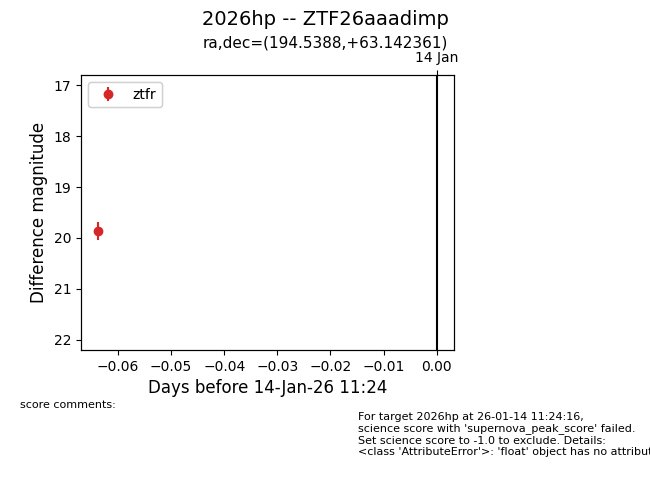
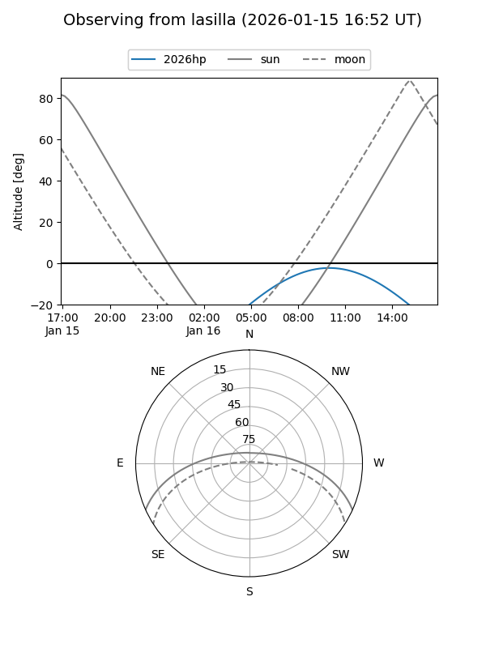
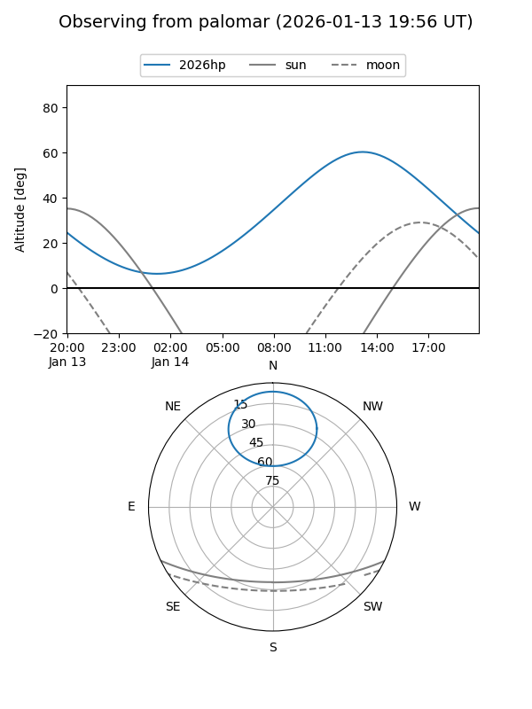
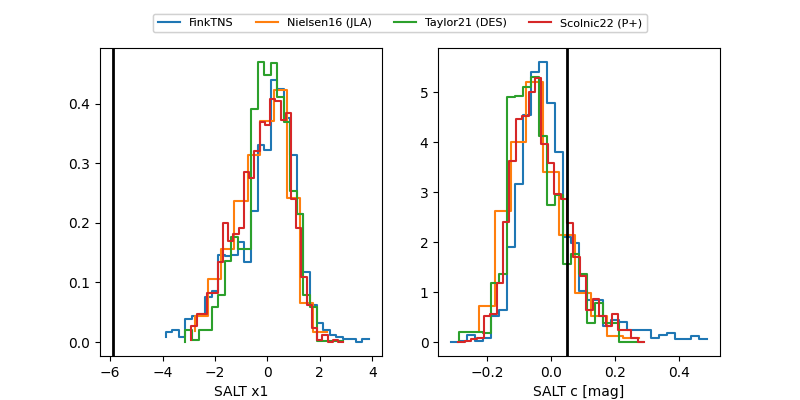

2026hp
Target 2026hp at 2026-01-16 11:40
Aliases and brokers:
FINK: link
Lasair: link
ALeRCE: link
TNS: link
YSE: link
alt names
ZTF26aaadimp (ztf,fink_ztf)
2026hp (tns,yse)
Coordinates:
equatorial (ra, dec) = 194.5388,+63.14236
equatorial (HMS+DMS) = 12:58:09.31,+63:08:32.50
galactic (l, b) = (121.6422,+53.96907)
Flags:
Photometry:
last ztfr=20.05
2 ztfr detections
Lightcurve

Visibility


Additional plots
